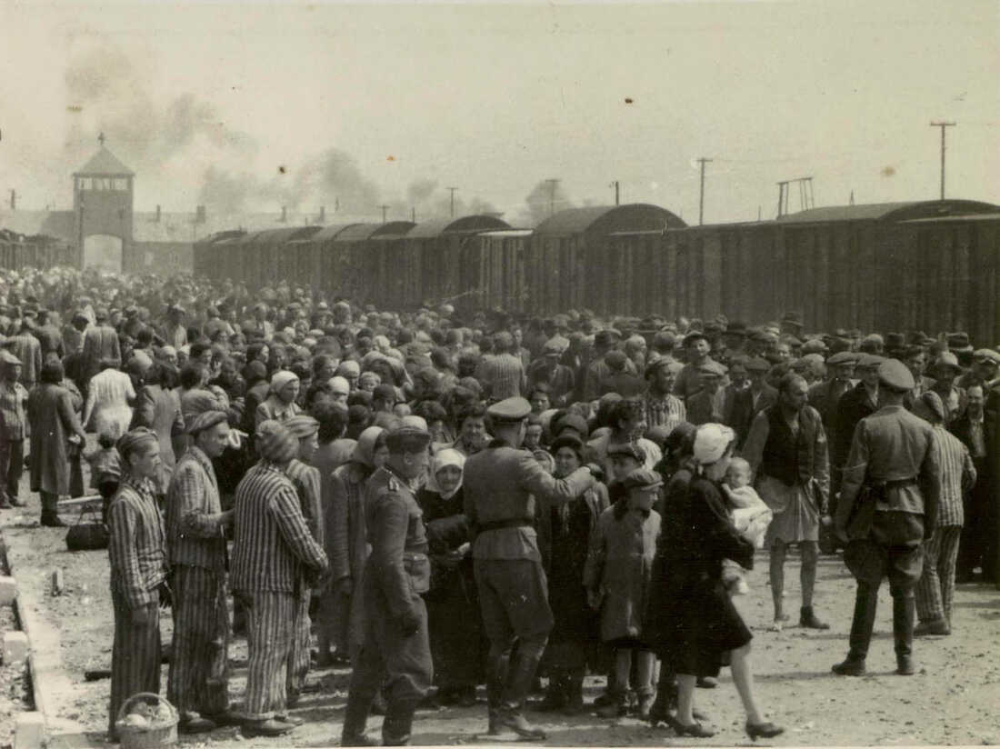
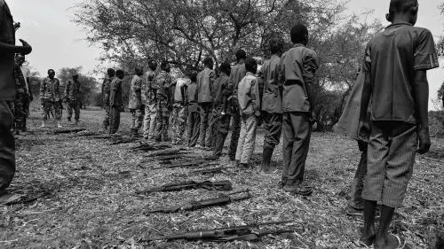

A death march taken by women and children during the Armenian Genocide, they would walk for up to
hundreds
of miles and they would walk days or weeks
ushmm.org

Jewish people being unloaded from train carts during the Holocaust, many people died on theese carts
before even making it into
death camps.This is where most families were seperated and the first selection was made. If you looked too
weak, too short, too fat or anything else they might not like. You were killed.
Npr.org

In the South Sudan, children are recruited and forcced to kill and act as perpetratos. The quote
assoiated with this image is as follows, "We can die too."